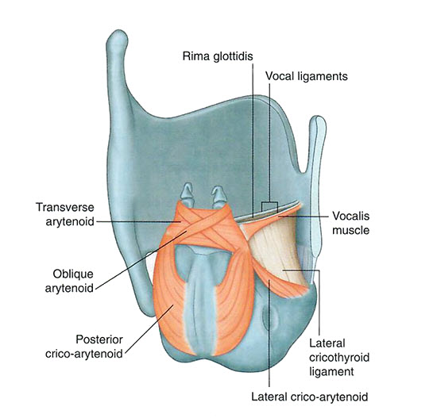

Pharynx and Larynx: Module 2 - Page 6 of 8
The following table highlights the function of these muscles:
Intrinsic Muscles of the Larynx |
||
Muscle |
Innervation |
Function |
Cricothyroid |
External branch superior laryngeal nerve from vagus -CNX |
Forward and downward rotation of thyroid cartilage at cricothyroid joint |
Posterior crico-arytenoid |
Recurrent layrngeal branch of vagus-CNX |
Primary abductors of the vocal cord. ie: the primary opener of the rima glottidiis |
Lateral crico-arytenoid |
Recurrent laryngeal branch of vagus-CNX |
Adduction of the vocal cords |
Transverse arytenoid |
Recurrent laryngeal branch of vagus-CNX |
Adduction of arytenoid cartilage |
Oblique arytenoid |
Recurrent laryngeal branch of vagus-CNX |
Sphincter of the laryngeal inlet |
Thyro-arytenoid |
Recurrent laryngeal branch of vagus-CNX |
Sphincter of vestibule and laryngeal inlet |
Vocalis |
Recurrent laryngeal branch of vagus-CNX |
Adjusts tension in vocal folds |
All the intrinsic musles of the larynx are innervated by the recurrent laryngeal nerve except? |
|
|
The cricothyroid. |
|
|  |
| 🔍 Larynx muscles |
| Add the vagas nerve (CNX). | |
| Add the superior laryngeal nerves. | |
| Add the recurrent laryngeal nerve. |
What would be the result of injury to the recurrent laryngeal nerve during the ligation of a patent ductus arteriosis? |
|
|
Hoarse voice or difficulty speaking, because this is a unilateral injury. You would have to injure both recurrent laryngeal nerves to make a patient completely mute or cause complete airway obstruction. |
|